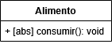
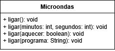

Voltando ao Java, podemos, assim como podemos fazer no C#, PHP, Python e outras linguagens, que um método seja abstrato também, para que possa ser sobreposto por classes filhas.
Um método abstrato é um método sem corpo, ou seja, sem código dentro dele. Ele apenas diz o que deve existir, mas não diz como funciona. Ele é criado em uma classe abstrata, e todas as classes filhas são obrigadas a implementar esse método, cada uma do seu jeito.
Veja um exemplo com a alteração da classe Alimento:
public abstract class Alimento {
public abstract void consumir();
}
Veja o diagrama da mesma classe:
Se uma classe tiver pelo menos um método abstrato, ela obrigatoriamente deve ser declarada como abstrata. Por isso usamos a palavra-chave abstract tanto na classe quanto no método.
No entanto, uma classe pode ser abstrata mesmo sem ter métodos abstratos, isso acontece quando queremos impedir que ela seja instanciada diretamente ou quando ela serve apenas como modelo para outras classes.
No C++, não existe o abstract
, nesse caso usamos métodos virtuais puros, que funcionam basicamente da mesma forma, no qual ele é associado a 0 sem nenhuma implementação, assim:
class Alimento {
public:
virtual void consumir() = 0;
virtual ~Alimento() = 0; // Toda classe abstrata deve ter um método destrutor virtual puro, mesmo que os outros métodos não os sejam
};
Alimento::~Alimento() { // Bloco vazio mesmo, padrão no C++.
}
Daí, nas classes filhas podemos manter a implementação dos métodos normalmente (mas sem usar o super ou equivalente):
Classe filha 1:
class Fruta extends Alimento {
@Override
public void consumir() {
System.out.println("Comendo uma fruta fresca.");
}
}
Classe filha 2:
class Verdura extends Alimento {
@Override
public void consumir() {
System.out.println("Comendo uma verdura saudável.");
}
}
No caso do C#, o override também é obrigatório na sobreposição de métodos abstratos, assim como acontece no Java, visto acima, e no C++ com os métodos virtuais puros.
Aí no código principal, podemos chamar os objetos tipando eles com a classe abstrata:
Alimento a1 = new Fruta();
Alimento a2 = new Verdura();
a1.consumir(); // chama o método da classe Fruta
a2.consumir(); // chama o método da classe Verdura
PS: Lembrando que, assim como acontecia com as interfaces e classes normais, poderemos usar apenas métodos definidos na classe mãe, no caso, a Alimento, no entanto, por esta ser abstrata, não poderá ser instanciada (com new Alimento()).
Lembrando também que mesmo que uma classe tenha apenas métodos abstratos, ela ainda é uma classe, enquanto a interface é um contrato puro. Como visto, uma classe, mesmo abstrata, pode ter tudo que uma normal tem, já as interfaces são puramente contratos de métodos. Mesmo classes abstratas só podem ser herdadas uma vez por classes filhas, exceto no C++ que permite herança múltipla, e nessa linguagem usamos classes virtuais puras (equivalente as abstratas) para simular interfaces por esta não as ter por padrão.
No caso do polimorfismo de sobreposição, o método tem a mesma assinatura em classes diferentes.
Polimorfismo de sobrecarga acontece quando uma mesma classe tem vários métodos com o mesmo nome, mas com parâmetros diferentes (quantidade ou tipos). Ou seja, o método se chama igual, mas aceita entradas diferentes e executa ações parecidas. É usado para facilitar a vida do programador, permitindo fazer a mesma ação de maneiras diferentes.
Tanto métodos comuns como métodos construtores podem ter sobrecarga, desde que os parâmetros sejam diferentes.
Veja esse exemplo com o Microondas, onde o método ligar têm parâmetros e implementações diferentes, mesmo tendo o mesmo nome:
public class Microondas {
// 1. Ligar sem parâmetros.
public void ligar() {
System.out.println("Microondas ligado com tempo padrão.");
}
// 2. Ligar com minutos e segundos (dois inteiros).
public void ligar(int minutos, int segundos) {
if((minutos >= 1 && segundos >= 0) || (minutos == 0 && segundos >= 1)) {
System.out.println("Microondas ligado por " + minutos + " min e " + segundos + " s.");
}
else {
System.out.println("ERRO! Tempo inválido!");
}
}
// 3. Ligar com comando aquecer (true/false).
public void ligar(boolean aquecer) {
if(aquecer) {
System.out.println("Microondas ligado no modo aquecer.");
}
else {
System.out.println("ERRO! Não posso aquecer!");
}
}
// 4. Ligar usando programas especiais (String).
public void ligar(String programa) {
if(programa.equals("Pipoca")) {
System.out.println("Microondas ligado para estourar pipoca.");
}
else if(programa.equals("Pizza")) {
System.out.println("Microondas ligado para assar pizza.");
}
else {
System.out.println("ERRO! Programa desconhecido!");
}
}
}
Diagrama da classe acima:
E na implementação:
Microondas micro = new Microondas();
micro.ligar(); // Sem parâmetros.
micro.ligar(1, 30); // Minutos e segundos.
micro.ligar(true); // Comando aquecer.
micro.ligar("Pipoca"); // Programa Pipoca.
micro.ligar("Pizza"); // Programa Pizza.
No caso acima, todos os métodos se chamam ligar
. A diferença está nos parâmetros. Isso é polimorfismo de sobrecarga, pois a classe oferece várias formas de executar a mesma ação.
No caso do polimorfismo de sobrecarga, o método tem assinaturas diferentes na mesma classe.
PS: O polimorfismo de sobrecarga só é possível em linguagens estaticamente tipadas como o Java, C# e C++, mas não em todas (Objective-C, por exemplo, não o têm). Em linguagens dinamicamente tipadas como o PHP, Python e Javascript, não é possível implementá-lo, tendo que ter métodos com nomes diferentes, nem que seja por um caractere.
Em linguagens como o Java, C# e C++, podemos usar classes genéricas também, para que seja feito o polimorfismo paramétrico.
Classes genéricas são classes que recebem um tipo como parâmetro, permitindo criar estruturas reutilizáveis que funcionam para qualquer tipo de dado, sem precisar repetir código.
Você usa um parâmetro de tipo, como <E> ou <E, D>, para dizer que aquele tipo será decidido quando o objeto for criado. É como se a classe fosse um molde
que pode trabalhar com qualquer tipo, definido depois.
Exemplo simples:
public class Caixa<E> { // O E será substituído pela classe/interface.
private E conteudo;
public void guardar(E valor) {
conteudo = valor;
}
public E abrir() {
return conteudo;
}
}
Código principal:
Caixa<String> texto = new Caixa<>();
texto.guardar("Olá");
System.out.println(texto.abrir());
Caixa<Integer> numero = new Caixa<>();
numero.guardar(42);
System.out.println(numero.abrir());
Caixa<Character> letra = new Caixa<>();
letra.guardar('A');
System.out.println(letra.abrir());
Caixa<Boolean> logico = new Caixa<>();
logico.guardar(true);
System.out.println(logico.abrir());
No caso do Java, devemos usar sempre as classes invólucros, não os tipos primitivos comuns.
Da mesma forma, podemos ter interfaces genéricas, usando a mesma lógica, assim como implementação das mesmas, e também heranças entre classes. Por exemplo, a interface pode ser algo como public interface NomeDaInterface<E>, e ser implementada assim:
| Implementação da Interface Genérica na Classe | Instância no Código Principal |
|---|---|
public class NomeDaClasse implements NomeDaInterface<ClasseInvolucro> |
NomeDaInterface objeto = new NomeDaClasse() |
public class NomeDaClasse<E> implements NomeDaInterface<E> |
NomeDaInterface<ClasseInvolucro> objeto = new NomeDaClasse<>() |
Baseado nesses conceitos, crie os seguintes projetos usando POO: